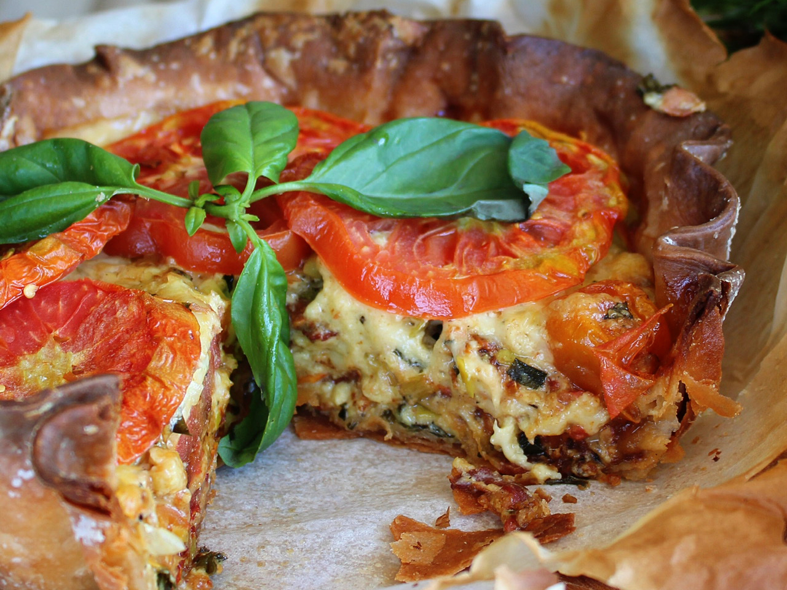

Description
Fresh tomatoes and a rich, cheesy filling make a summertime savory pie.
There is a lot of preparation for this pie, but it is well worth every
minute. I love this pie on summer mountain evenings. Enjoy with cool ice
tea.
Ingredients
- 1 recipe pastry for a 9-inch pie crust
- 2 pounds heirloom tomatoes
- 1 pound Roma tomatoes
- 1 cup diced raw bacon
- ½ cup sliced leek
- 2 cups grated white Cheddar cheese
- ½ cup grated Fontina cheese
- ½ cup mayonnaise
- ½ cup fresh basil, torn into small pieces
- 1 egg
- 1 tablespoon Dijon mustard
- 1 pinch salt and ground black pepper to taste
Steps
- Chill pie dough for about 1 hour.
-
Preheat the oven to 425 degrees F (220 degrees C). Place a baking
sheet on the lower oven rack.
-
Slice heirloom tomatoes into 1/2-inch rounds. Remove seeds with your
fingers. Place 6 slices on paper towels or a clean cloth and cover
with more paper towels or another clean cloth. Arrange the remaining
slices on a wire rack. Cut Roma tomatoes into 1/2-inch slices, remove
seeds, and arrange them on the rack as well.
-
Line a deep-dish, 9-inch pie plate with dough. Place 2 layers of
aluminum foil over the entire surface. Fill with pie weights or dried
beans.
-
Bake pie crust on the preheated baking sheet on the bottom rack. Place
tomatoes on a higher rack. Reduce temperature to 400 degrees F (200
degrees C). Bake until the bottom of the pie crust has lost its
translucent raw look and the edges have just started to color, 12 to
15 minutes.
-
Carefully remove the foil and the weights. Cover the edges of the
crust with foil to prevent them from burning. Poke the bottom of the
pie crust with a fork to keep it from puffing up. Return the pie crust
to the bottom rack and bake until the bottom starts to color, about 8
more minutes.
-
Remove pie crust and allow to cool. Continue baking the tomatoes until
they are wilted, about 40 minutes total. Remove and allow to cool.
Keep the oven on.
-
Place bacon in a large skillet and cook over medium-high heat, turning
occasionally, until some of the fat has rendered, about 5 minutes. Add
sliced leek. Cook until bacon is crisp and the leeks have softened and
browned, about 5 more minutes. Drain bacon on paper towels and allow
to cool.
-
Place bacon-leek mixture, Cheddar, Fontina, mayonnaise, basil, egg,
and mustard in a bowl. Season with salt and pepper. Mix to combine.
-
Spread 1/3 mixture on the bottom of the pie crust. Arrange 1/2 of the
roasted tomatoes on top, overlapping heirlooms with Roma tomatoes.
Spread another 1/3 of the mixture over the tomatoes and arrange the
remaining roasted tomatoes on top. Add the last 1/3 of the mixture and
gently press the fresh tomato slices on top in a decorative pattern.
Arrange foil around the edges of the pie crust to protect them from
burning, taking care that the foil doesn't touch the tomatoes.
-
Bake until browned and bubbly on top, about 40 minutes. Cool
completely before serving.